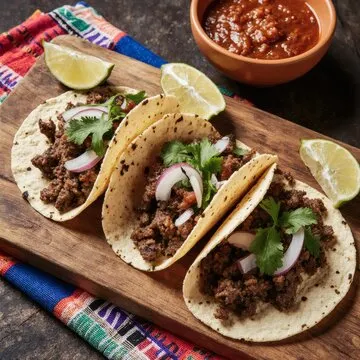

Esta es la receta de tacos deliciosos
Ingredientes:
Marinada para la Carne Asada:
Tacos de Carne Asada::
Instrucciones:
1. Marinada para la Carne Asada: Mezcla el chile en polvo, el comino, el orégano, el ajo en polvo, la cebolla en polvo, y la sal y pimienta; frota la carne con estas especias. Rocía el aceite de oliva, jugo de naranja, jugo de limón y vinagre sobre la carne; frota la carne con la mezcla y voltéala para cubrir por ambos lados. Mezcla la cebolla, el ajo y el cilantro. Pon en una bolsa plástica resellable y refrigera por un mínimo de 4 horas o hasta el día siguiente. 2. Saca la carne de la marinada y déjala reposar a temperatura ambiente por una hora. Calienta a fuego alto una sartén grande (14 pulgadas) de fondo grueso; cocina la carne de 3 a 5 minutos por cada lado, para término medio-crudo, o cocina al gusto deseado. Pasa la carne a la tabla de cortar y déjala reposar 10 minutos. Corta en tiras finas a lo largo de la fibra. 3. Vuelve a poner la carne en la sartén y sofríe 2 minutos a fuego medio-alto. 4. Tacos de Carne Asada: Cubre la carne que está en el sartén con las tortillas; tapa la sartén. Cocina de 1 a 2 minutos o hasta que las tortillas se calienten y absorban el sabor de la carne asada. Retira las tortillas y mantenlas tibias. 5. Deja las 2 tortillas restantes sobre la carne; cocina de 2 a 3 minutos adicionales o hasta que las tortillas absorban más jugo y sabor de la carne. Sirve estas tortillas como guarnición, rellenas de frijoles refritos y 1 cda. de salsa verde. Dobla las tortillas a la mitad; cúbrelas con crema agria, salsa, queso Cotija y lechuga. 6. Sirve las tortillas restantes como tacos con carne asada, el resto de la salsa verde, el aguacate en rebanadas, la cebolla, el cilantro y el limón.